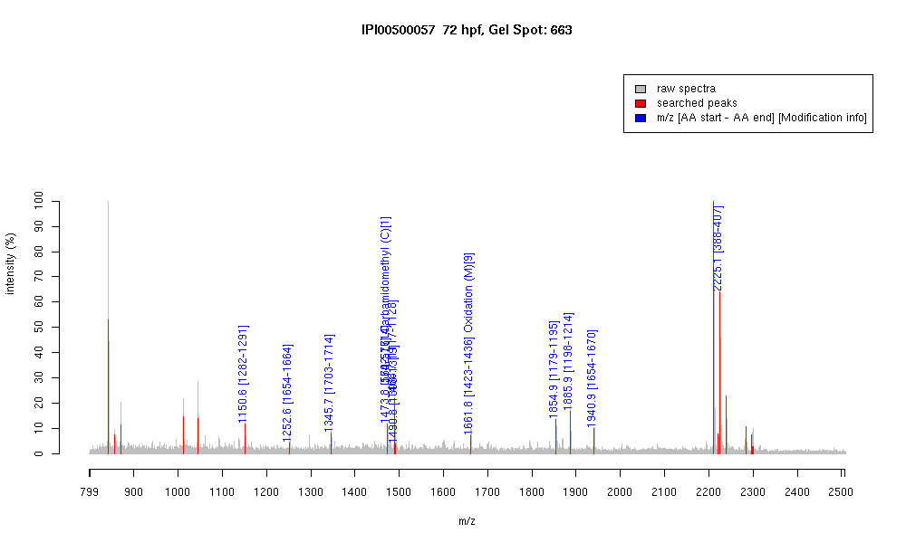

| Name | "Myosin, heavy polypeptide 2, fast musclespecific" |
|---|---|
| MW | 221742.5 |
| PI | 5.55 |
| Mascot Protein Score | 93 |
| Masses (matched / unmatched) | 12 / 17 |

| Peptide | MZ (calc) | MZ (observed) | Error (DA) | Error (PPM) | Start | Stop | Modifications |
|---|---|---|---|---|---|---|---|
| LQTENGEFGR | 1150.5487 | 1150.5544 | 0.0057 | 5 | 1282 | 1291 | |
| DAQLHLDDAVR | 1252.6281 | 1252.6364 | 0.0083 | 7 | 1654 | 1664 | |
| VAEQELVDASER | 1345.6594 | 1345.6671 | 0.0077 | 6 | 1703 | 1714 | |
| KVAEQELVDASER | 1473.7543 | 1473.7748 | 0.0205 | 14 | 1702 | 1714 | |
| CNAFQKPKPAKGK | 1473.7994 | 1473.7748 | -0.0246 | -17 | 564 | 576 | Carbamidomethyl (C)[1] |
| IEELEEEIEAER | 1488.7064 | 1488.713 | 0.0066 | 4 | 1117 | 1128 | |
| QAFTQQIEELKR | 1490.7961 | 1490.7638 | -0.0323 | -22 | 1308 | 1319 | |
| LQGEVEDLMIDVER | 1661.8051 | 1661.8099 | 0.0048 | 3 | 1423 | 1436 | Oxidation (M)[9] |
| DLEESTLQHEATAAALR | 1854.9192 | 1854.927 | 0.0078 | 4 | 1179 | 1195 | |
| QADSVAELGEQIDNLQR | 1885.925 | 1885.903 | -0.022 | -12 | 1198 | 1214 | |
| DAQLHLDDAVRGQEDMK | 1940.9131 | 1940.9366 | 0.0235 | 12 | 1654 | 1670 | |
| IAYLLGLNSADMLKALCYPR | 2225.1821 | 2225.116 | -0.0661 | -30 | 388 | 407 |